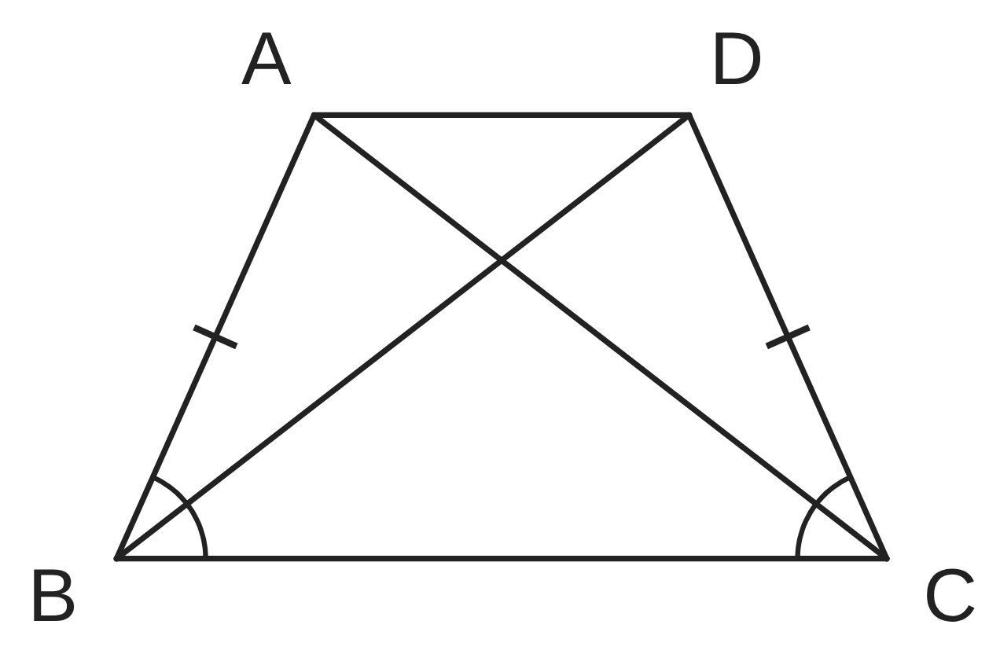
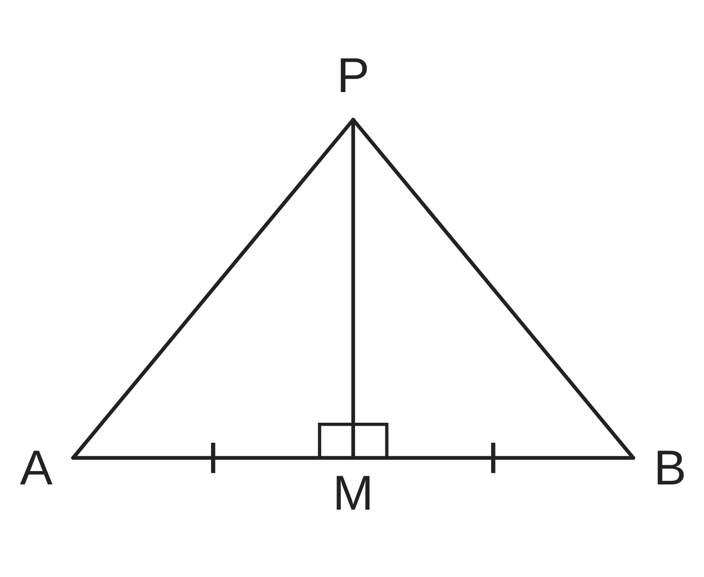
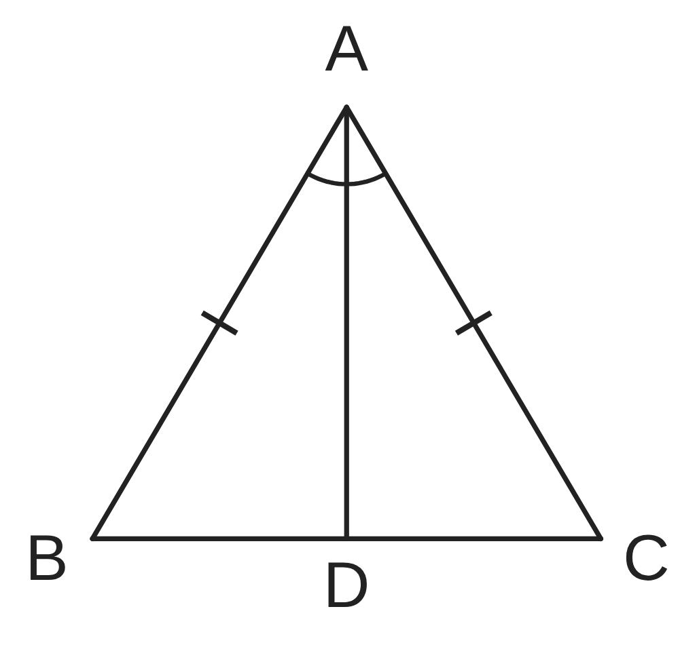

ペア学習
第13時 合同を使って、線分や角が等しいことを証明しよう
前の時間の重要語句を、ペアで出し合おう
第12時の重要語句から、1人1問ずつ、言葉を選んで出題する。
聞かれた人は、その言葉の意味を、自分の言葉で言う。
仮定
根拠
証明
合同条件
平行と合同 第13時 合同を使って、線分や角が等しいことを証明しよう
めあて
第13時 合同を使って、線分や角が等しいことを証明しよう
合同を使って、線分や角が等しいことを証明しよう
学習課題
右の図の四角形 ABCD で、AB＝DC、
∠ABC＝∠DCB ならば、AC＝DB である。
このことを、証明しよう。
仮定 … AB＝DC、∠ABC＝∠DCB
結論 … AC＝DB
【目をつける三角形】

平行と合同 第13時 合同を使って、線分や角が等しいことを証明しよう
学習課題のまとめ
第13時 合同を使って、線分や角が等しいことを証明しよう
AB＝DC、∠ABC＝∠DCB ならば、AC＝DB を証明しよう。
【目をつける三角形】△ABC と △DCB
△ABC と △DCB において
仮定より AB＝DC …①
仮定より ∠ABC＝∠DCB …②
BC は共通 …③
①、②、③より、2組の辺とその間の角が、
それぞれ等しいから △ABC≡△DCB
合同な図形の、対応する辺は等しいから AC＝DB

平行と合同 第13時 合同を使って、線分や角が等しいことを証明しよう
ことば
第13時 合同を使って、線分や角が等しいことを証明しよう
2つの三角形が同じ辺（または角）をもつとき、
その辺（角）は であるという。
三角形の は、3組の辺、2組の辺とその間の角、
1組の辺とその両端の角が、それぞれ等しいこと。
合同な図形では、 辺や角は等しい。
平行と合同 第13時 合同を使って、線分や角が等しいことを証明しよう
ことば
第13時 合同を使って、線分や角が等しいことを証明しよう
2つの三角形が同じ辺（または角）をもつとき、
その辺（角）は共通であるという。
三角形の合同条件は、3組の辺、2組の辺とその間の角、
1組の辺とその両端の角が、それぞれ等しいこと。
合同な図形では、対応する辺や角は等しい。
平行と合同 第13時 合同を使って、線分や角が等しいことを証明しよう
例題
第13時 合同を使って、線分や角が等しいことを証明しよう
右の図で、点 M は線分 AB の中点で、
PM⊥AB である。PA＝PB を証明しよう。
仮定 … AM＝ 、PM⊥
結論 … ＝PB
【目をつける三角形】

平行と合同 第13時 合同を使って、線分や角が等しいことを証明しよう
例題 解答
第13時 合同を使って、線分や角が等しいことを証明しよう
仮定 … AM＝BM、PM⊥AB 結論 … PA＝PB
【目をつける三角形】△PAM と △PBM
△PAM と △PBM において
M は AB の中点だから AM＝BM …①
PM⊥AB だから ∠PMA＝∠PMB＝90° …②
PM は共通 …③
①、②、③より、2組の辺とその間の角が、
それぞれ等しいから △PAM≡△PBM
合同な図形の、対応する辺は等しいから PA＝PB

平行と合同 第13時 合同を使って、線分や角が等しいことを証明しよう
考えよう
第13時 合同を使って、線分や角が等しいことを証明しよう
ア〜ウは、次のことがらの証明として、3人が書いたものである。
△ABC で、AB＝AC、AD は ∠BAC の二等分線ならば、BD＝CD である。
正しいものに ○、そうでないものに × をつけ、わけを書こう。
①
ア〜ウを読んで、証明を書くとき、大切なことをまとめよう。

ア
△ABD と △ACD において
AB＝AC、∠BAD＝∠CAD
だから、△ABD≡△ACD
合同な図形の、対応する辺は
等しいから BD＝CD
発展
演習まで解き終わった人は、考えてみよう！学習課題の図で、対角線 AC と DB の交点を O とする。△ABO≡△DCO であることを、証明できるだろうか。考えよう。
イ
△ABD と △ACD において
仮定より AB＝AC …①
BD＝CD …②
AD は共通 …③
①、②、③より、
3組の辺が、それぞれ等しいから
△ABD≡△ACD
合同な図形の、対応する辺は
等しいから BD＝CD
ウ
△ABD と △ACD において
仮定より AB＝AC …①
∠BAD＝∠CAD …②
AD は共通 …③
①、②、③より、
2組の辺とその間の角が、
それぞれ等しいから
△ABD≡△ACD
合同な図形の、対応する辺は
等しいから BD＝CD
平行と合同 第13時 合同を使って、線分や角が等しいことを証明しよう
振り返り
第13時 合同を使って、線分や角が等しいことを証明しよう
今日のめあて
合同を使って、線分や角が等しいことを証明しよう
共通
合同条件
対応する
今日わかったことを、ペアで1つずつ言い合おう。
ワークシートと演習プリントを出そう。（未完成でも出す）
平行と合同 第13時 合同を使って、線分や角が等しいことを証明しよう